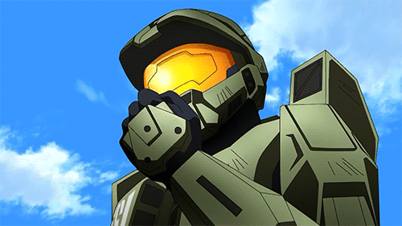
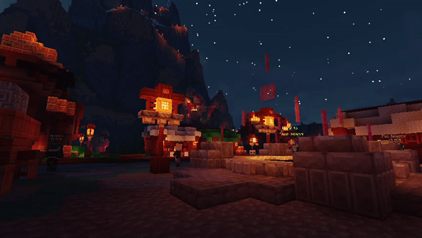

| Halo | Xbox | Ciencia ficción | 15/Noviembre/2001 |  | Este videojuego es de los mejores en cuanto acción e historia se refiere, quede encantado con su modo historia y no hay que olvidar su entretenido modo multijugador. |
| Minecraft | Xbox | Mundo abierto | 17/Mayo/2009 |  | Es muy entretenido cuando lo juegas solitario pero se vuelve aun mejor con amigos, recomendado por mí para sacar risas con tus amigos. |
| Left 4 dead 2 | Xbox | Terror | 17/Noviembre/2009 |  | Este videojuego es excelente, me gustó mucho su modo historia y cuesta muy barato para ser muy buen juego. |
| Silent Hill Homecoming | Xbox | Terror | 30/Diciembre/2008 |  | Si te quieres entretener y también morir de sustos, este juego es de lo máximo en terror... |
| Mario Kart 64 | Nintendo | Carreras | 14/Diciembre/1996 |  | Este fue de los primeros videojuegos que jugué cuando era niño, estoy muy gustoso con este videojuego el cual marcó mi infancia. |
| Super Smash Bros 64 | Nintendo | Lucha | 21/Enero/1999 |  | Smash Bros 64 también fue los videojuegos que marcaron mi infancia, me gustó demasiado jugarlo con mis amigos y hermanos, es demasiado entretenido. |